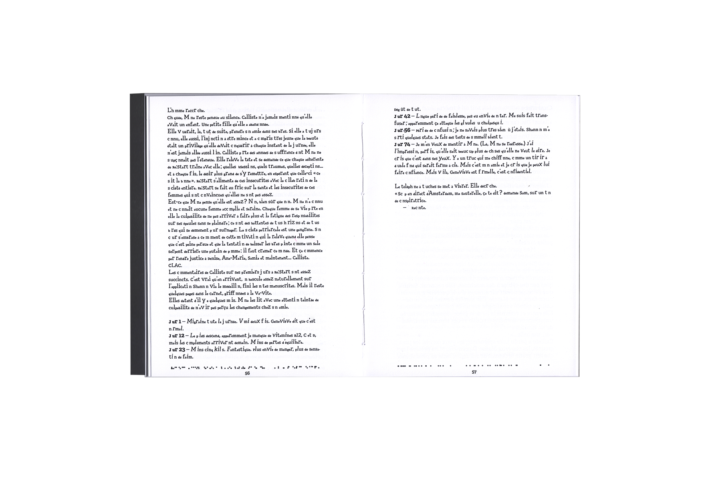
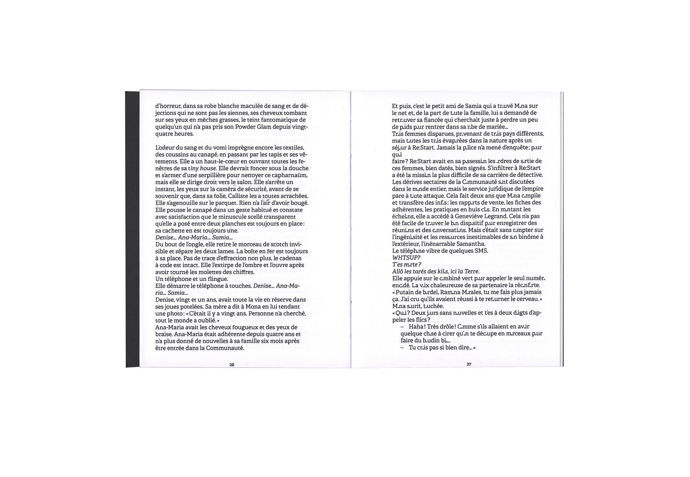
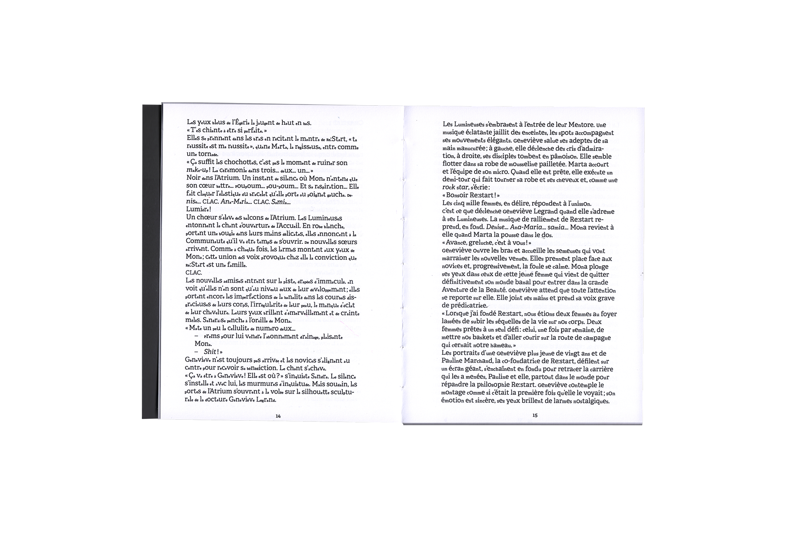
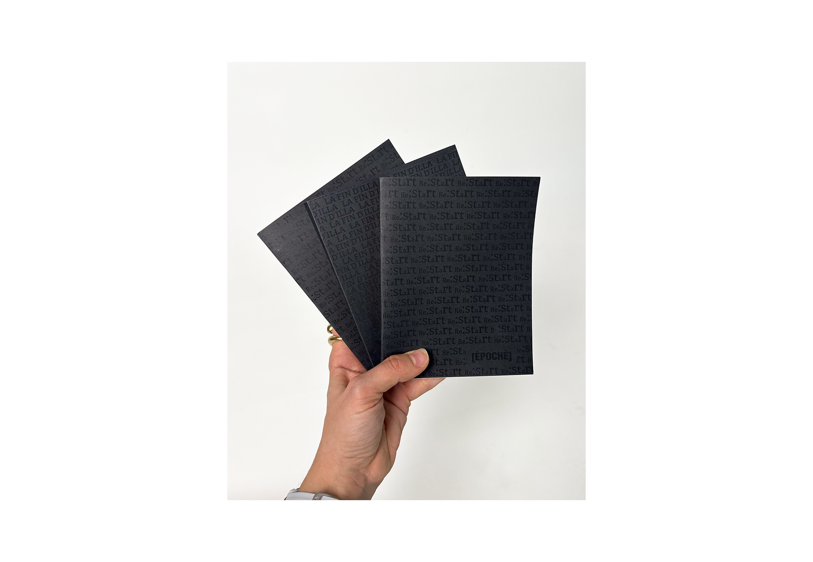

Créer une collection singulière à partir d’un récit de science-fiction existant, où la microtypographie et la macrotypographie traduisent le sujet du livre. Develop a distinctive book collection inspired by an existing science fiction story, using microtypography and macrotypography to visually interpret and express the themes of the text.
Le texte choisi raconte l’intégration d’une femme dans une communauté obsédée par la maigreur et la beauté de la femme, où l’on découvre ces dérives. Par la microtypographie, le texte joue sur une mise en avant des lettres droites et fines, et sur une invisibilisation des lettres rondes, reflétant visuellement ces dérives et contraintes sociales. The chosen narrative explores a woman’s integration into a community driven by ideals of thinness and beauty, exposing their underlying extremes. At the microtypographic level, upright and condensed letterforms are accentuated, while rounded forms are visually minimized—translating these social constraints and aesthetic biases into typographic language.



